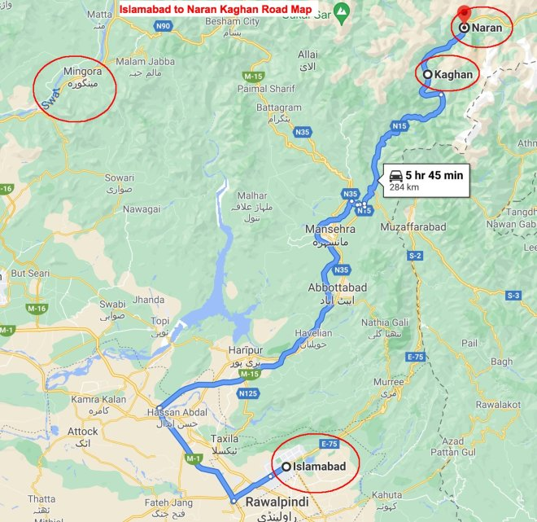

Discovering Naran Valley: Your Complete Travel Guide
Places to Visit:
Naran & Kaghan are known for their breathtaking natural beauty. The guides detail they must-visit locations in these valleys, such as:
- Saiful Malook Lake.
- Dudipatsar Lake.
- Lulusar Lake.
- Babusar Top.
- Mansehra.
- Shogran.
Things to Do:
Check out these guides to find lots of different things to do, like exciting activities such as:
- Camping.
- Fishing.
- Boating.
- Horse Riding.
- Hiking.
- Shopping.
Local Tips:
Weather & Clothing: Make sure to pack clothes that suit the weather. During summer, it's generally warm, but evenings can turn cooler, so it's a good idea to have a jacket or sweater on hand. In the winter, the temperatures drop significantly, so you'll definitely need warm clothing and multiple layers to stay comfortable and protected from the cold.
Altitude Sickness: If you're not used to high altitudes, go slow for the first couple of days to avoid altitude sickness. Drink water and eat light.
Transportation: Be aware of the local transportation options and schedules. It's often best to book your transportation ahead of time, especially during peak tourist seasons.
Environmental Conservation: Keep Naran and Kaghan clean. Don't litter, and dispose of your trash properly to protect their beautiful environment.
Cash and ATMs: In some areas, ATMs may not be readily available, so it's a good idea to carry enough cash for your trip.
Route Map from Islamabad to Naran
Babusar Top: A Must-Visit for Adventurers and Photographers
When to Visit Babusar Top:
The best time to visit Babusar Top is during the summer months, from May to September. During this time, the weather is generally mild and sunny. However, it is important to be prepared for all types of weather, as the pass can be quite unpredictable.
Things to do at Babusar Top:
- Hike to the top of Babusar Pass for stunning views of the surrounding mountains and valleys.
- Visit the nearby villages of Naran and Kaghan to learn about the local culture and traditions.
- Visit the nearby Lulusar Lake and Dudipatsar Lake for swimming, boating, and fishing.
- Go trekking or camping in the surrounding mountains.
Local tips:
- Be prepared for all types of weather, as Babusar Top can be quite unpredictable.
- Pack warm clothes, even in the summer, as the temperature can drop significantly at night.
- Bring plenty of water and snacks, as there are limited food and drink options available on the pass.
- Be aware of the dangers of altitude sickness and take precautions accordingly.
- If you are planning on trekking or camping in the surrounding mountains, be sure to hire a qualified guide.
Milestone & Map at Babusar Top